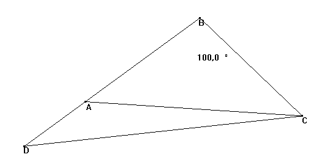

Problema 69
Se tiene un triángulo isósceles ABC con ABC=100º. Se construye D en la semirecta de origen B que contiene a A tal que CA=BD. Calcular el ángulo ACD |
Gutierrez, A. (2002): Geometry step by step. 11.100° Isosceles Triangle Problem
